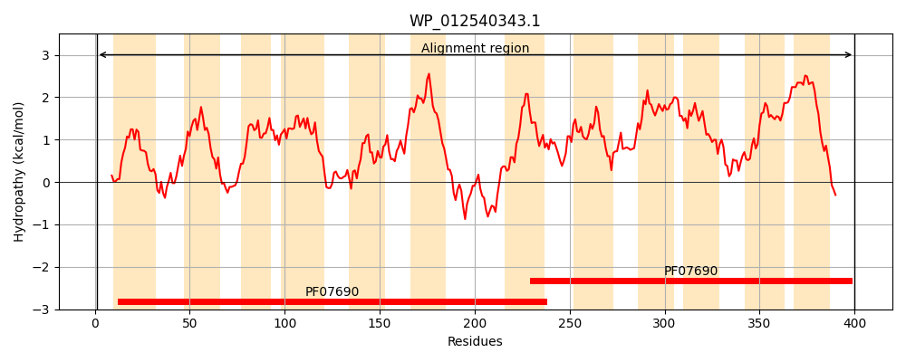
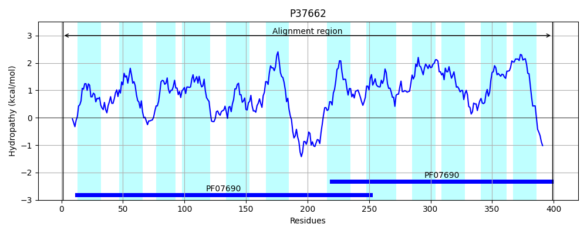
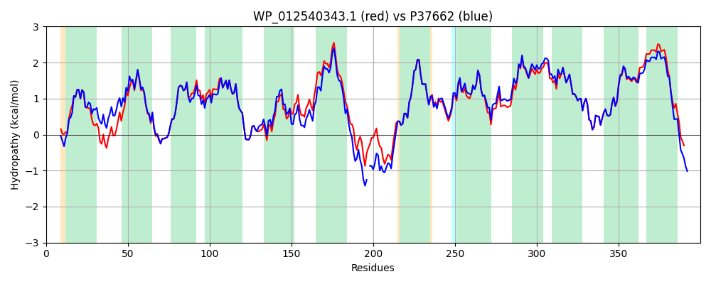

Hit Accession: P37662
Hit TCID: 2.A.1.11.3
Hit Description: gnl|BL_ORD_ID|10126 gnl|TC-DB|P37662|2.A.1.11.3 Inner membrane protein yhjX OS=Escherichia coli (strain K12) GN=yhjX PE=1 SV=1
Mach Len: 400
e:0.000000
Query TMS Count : 12
Hit TMS Count: 12
TMS-Overlap Score: 12.000000
Predicted Substrates:CHEBI:15361;pyruvate
BLAST Alignment:
Score: 1771 , Bit scores: 686 bits, E-value: 0.0e+00, Alignment length: 400, Percentage identity: 88
Query: 1 MNAANRQSTRWLTLIGTIITQFALGSVYTWSLFNSSLSDKLGEPVSQVAFSFGLLSLGLALSSSVAGKLQERFGVKRVTMASGILLGLGFFLTAHSNSLMMLWLSAGVLVGLADGAGYLLTLSNCVKWFPERKGLISAFSIGSYGLGSLGFKFIDSHLLATVGLEKTFVIWGAIVLVMIVFGATLMKDAPNHTATTAANGVVENDFTLAESMRKPQYWMLAVMFLTACMSGLYVIGVAKDIAQGMVHLDVATAANAVTVISIANLSGRLVLGILSDKISRIRVITLGQIVSLVGMAALLFAPLNAMTFFAAIACVAFNFGGTITVFPSLVSEFFGLNNLAKNYGVIYLGFGIGSICGSLIASLFGGFYVTFCVIFALLILSLALSTTIRQPKGSVYSEAH 400
M +N Q TRWLTLIGTIITQFALGSVYTWSLFN +LS KL PVSQVAFSFGLLSLGLA+SSSVAGKLQERFGVKRVTMASGILLGLGFFLTAHS++LMMLWLSAGVLVGLADGAGYLLTLSNCVKWFPERKGLISAF+IGSYGLGSLGFKFID+ LL TVGLEKTFVIWGAI L+MIVFGATLMKDAP T+ NGVVE D+TLAESMRKPQYWMLAVMFLTACMSGLYVIGVAKDIAQ + HLDV +AANAVTVISIANLSGRLVLGILSDKI+RIRVIT+GQ++SLVGMAALLFAPLNA+TFFAAIACVAFNFGGTITVFPSLVSEFFGLNNLAKNYGVIYLGFGIGSICGS+IASLFGGFYVTF VIFALLILSLALSTTIRQP+ + EAH
Sbjct: 1 MTPSNYQRTRWLTLIGTIITQFALGSVYTWSLFNGALSAKLDAPVSQVAFSFGLLSLGLAISSSVAGKLQERFGVKRVTMASGILLGLGFFLTAHSDNLMMLWLSAGVLVGLADGAGYLLTLSNCVKWFPERKGLISAFAIGSYGLGSLGFKFIDTQLLETVGLEKTFVIWGAIALLMIVFGATLMKDAPKQEVKTS-NGVVEKDYTLAESMRKPQYWMLAVMFLTACMSGLYVIGVAKDIAQSLAHLDVVSAANAVTVISIANLSGRLVLGILSDKIARIRVITIGQVISLVGMAALLFAPLNAVTFFAAIACVAFNFGGTITVFPSLVSEFFGLNNLAKNYGVIYLGFGIGSICGSIIASLFGGFYVTFYVIFALLILSLALSTTIRQPEQKMLREAH 399 | Protein Hydropathy Plots: |
|---|
|  |  |
Pairwise Alignment-Hydropathy Plot:
|
|---|
|  |